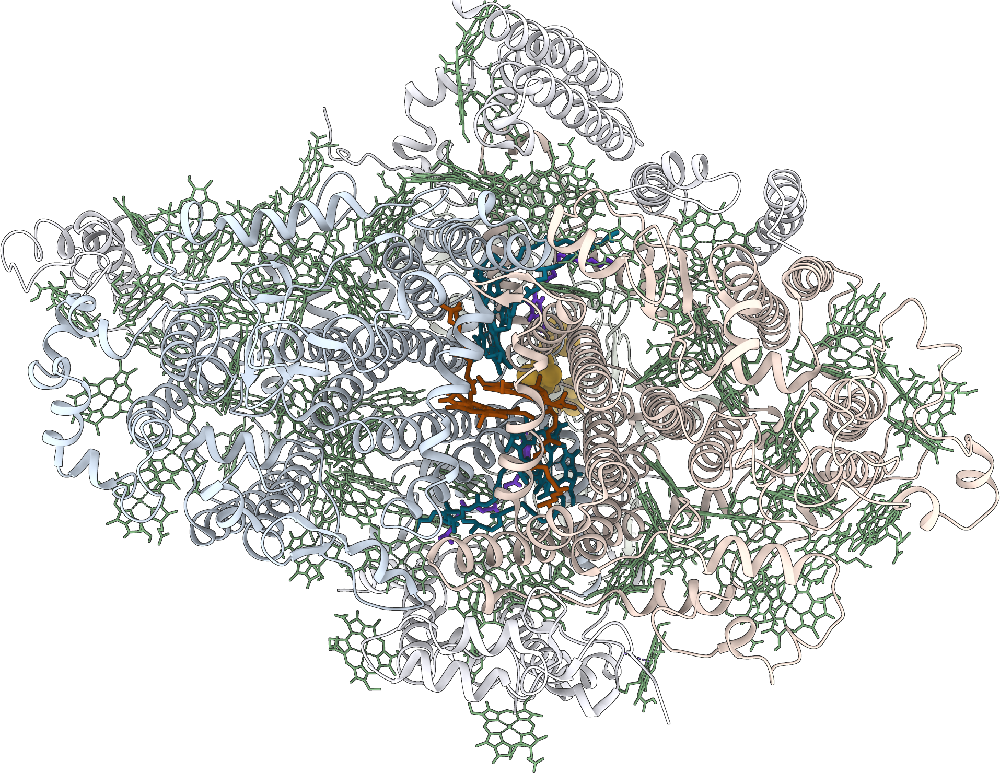
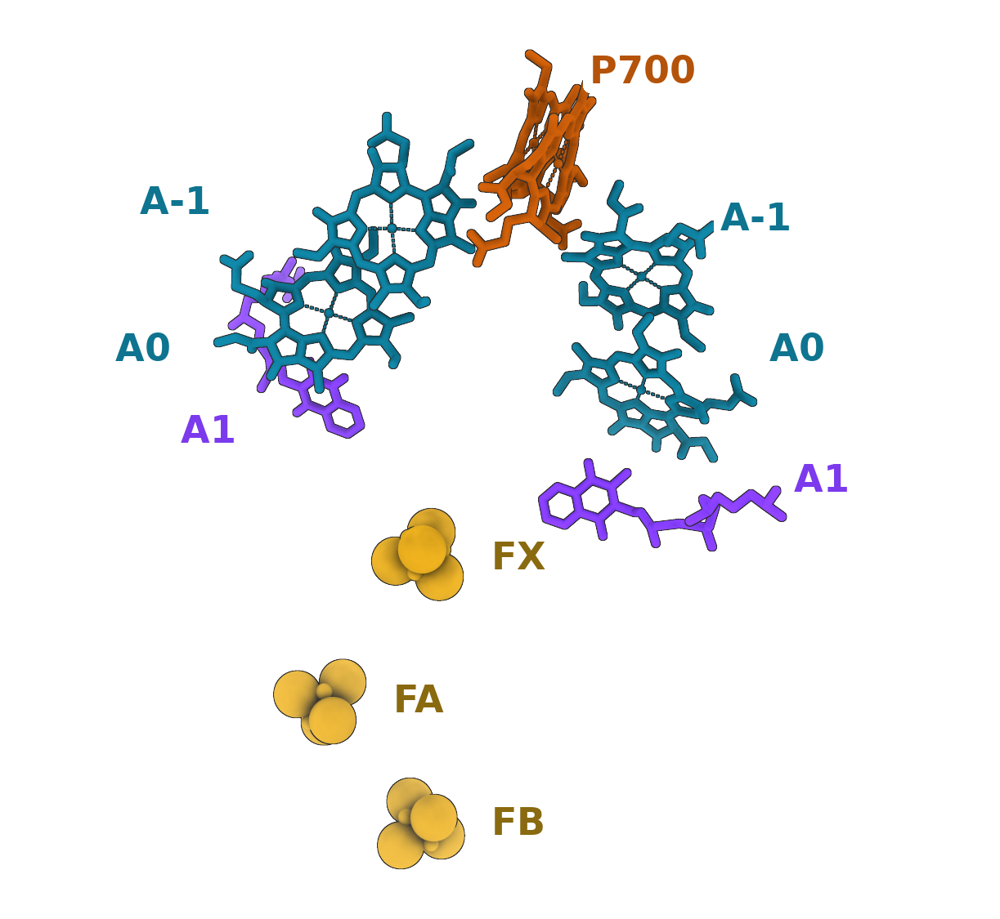

CHM 598 · Introduction to Photochemistry
How antenna proteins and reaction centres win a race against time, and how AI is learning the same rules to design photocatalysts
An excited molecule gets about 6 nanoseconds. This talk is about what happens inside that window.
Ditsa Mallick · [presentation date]
Scales of photosynthesis
zoom 50 cm → 1 Å · absorb → move → separate → build → search → learn
Schematic; scale bar gives approximate true size · PSI: 96 Chl per monomer (Jordan 2001, ref 10) · loops every ~50 s, click to restart
2
Energetics
zoom 50 cm · absorb → move → separate → build → search → learn
1.2 × 10⁵ TW
sunlight striking Earth
13.5 TW
human use, 2001
E = hc/λ = 1239.8 eV·nm / λ
680 nm → 1.82 eV = 176 kJ mol⁻¹
C–H ≈ 4.3 eV, O–H ≈ 4.8 eV > 1 photon
8 photons ≈ 14.4 eV → O₂ + 2 NADPH
stored: 4 e⁻ × 1.14 V ≈ 4.6 eV ≈ 32 %
So photosynthesis stores energy one electron at a time, and every step has to outrun decay of the excited state.
Lewis & Nocera, PNAS 2006 · E°′(O₂/H₂O) = +0.82 V, E°′(NADP⁺/NADPH) = −0.32 V at pH 7
3
Photochemistry vs thermal chemistry
zoom 1 Å · absorb → move → separate → build → search → learn
1 · Different activation, different selectivity. 2 · More product states reachable from S₁. 3 · Excited states are “electronic isomers”.
E(D⁺/D*) = E(D⁺/D) − E₀₀
P700: +0.45 V − 1.77 eV
→ E(P700⁺/P700*) ≈ −1.3 V
UV‑B [2+2] thymine dimers in DNA: photo‑allowed, thermally forbidden.
Woodward & Hoffmann, JACS 87, 395 (1965) · CHM 598 lectures 13–15 · E(P700⁺/P700) ≈ +0.45 V: Brettel 1997
4
Franck–Condon principle
zoom 1 Å · absorb → move → separate → build → search → learn
Electrons move far faster than nuclei. Intensity follows the overlap of vibrational wavefunctions.
I(0→v′) ∝ |⟨χ₀|χ_v′⟩|²
= e^(−S) S^v′ / v′!
S = Δ²/2, λ = S ħω
This overlap becomes the Marcus term in electron transfer (lecture 16).
Franck 1926 · Condon 1926 · CHM 598 lectures 15–16 · displaced harmonic‑oscillator model, ħω = 1
5
Excited‑state kinetics
zoom 1 nm · absorb → move → separate → build → search → learn
Upper states relax in femtoseconds, so emission, transfer and chemistry start from the lowest S₁: for Chl, the Qy state.
Two HOMOs and two LUMOs mix into a strong Soret band (≈ 430 nm) and weaker Q bands (Qy ≈ 670 nm). The protein tunes Qy.
Φ_F = kᵣ / (kᵣ + k_IC + k_ISC + k_EET)
Chl a: τ ≈ 6 ns, Φ_F ≈ 0.32
→ kᵣ = Φ_F/τ ≈ 5 × 10⁷ s⁻¹
Kasha 1950 · Gouterman 1961 · Weber & Teale 1957 (Chl a Φ_F in ether)
6
Light harvesting
zoom 15 nm · absorb → move → separate → build → search → learn
k_abs = σ · I
σ ~ 10⁻¹⁶ cm²
I ~ 10¹⁷ photons cm⁻² s⁻¹
→ k_abs ~ 10 s⁻¹ (full sun)
Share one costly reaction centre among ~100 cheap pigments: ~100× the photon supply.
Now the energy must travel to the centre, and finish well inside 6 ns.
~10 photons s⁻¹ per Chl in full sun: Blankenship, Molecular Mechanisms of Photosynthesis (2014) · order‑of‑magnitude estimate
7
Antenna proteins
zoom 100 nm · absorb → move → separate → build → search → learn
LH2 rings: 9 αβ pairs, 18 B850 + 9 B800 BChl a, 9 carotenoids. LH2 → LH1 → RC.
D* + A → D + A* + ΔH
k_f / k_b = K = e^(ΔE/kT)
B850→B875: 42 meV ≈ 1.6 kT
Heat buys irreversibility. P870 sits slightly uphill of LH1.
McDermott et al., Nature 374, 517 (1995) · times: Sundström, Pullerits & van Grondelle, JPC B 103, 2327 (1999) · CHM 598 L13, L15
8
Excitonic coupling
zoom 1 nm · absorb → move → separate → build → search → learn
V = κ μ² / (4πε₀ n² R³)
κ = cos θ₁₂ − 3 cos θ₁ cos θ₂
E± = E₀ ± V, |±⟩ = (|eg⟩ ± |ge⟩)/√2
f± ∝ |μ₁ ± μ₂|²
Head‑to‑tail (κ < 0): the bright state is the lower one → red shift. Side‑by‑side (κ > 0): bright state on top → blue shift.
Worked example: μ ≈ 4 D, R = 0.9 nm, κ = −2, n² ≈ 2 → V ≈ −110 cm⁻¹, enough for sub‑ps transfer. The same physics colours dye aggregates and stacked COF layers.
Kasha, Rawls & El‑Bayoumi 1965 · V(cm⁻¹) ≈ 5.04 κ μ²(D²) / n²R³(nm³), point‑dipole approximation
9
Energy‑transfer kinetics
zoom 1–5 nm · absorb → move → separate → build → search → learn
k_F = (1/τ_D) · (R₀/R)⁶
R₀⁶ ∝ κ² Φ_D J / n⁴
E = 1 / (1 + (R/R₀)⁶)
|V| ≪ λ (reorganisation, disorder): incoherent Förster hops. |V| ≳ λ: delocalised excitons (Redfield). PSI’s ~1 nm Chl spacing sits in between: coupled clusters hopping to each other.
Φ = 1/(1 + τ_trap/τ_loss) = 1/(1 + 25 ps / 6 ns) ≈ 0.996
Förster 1948 · regimes and PSI trapping: Gobets & van Grondelle 2001 · population curves are illustrative
10
Energy‑transfer mechanisms
zoom < 1 nm · zoom < 1 nm · absorb → move → separate → build → search → learn
Förster: k ∝ κ² k_D⁰ J / R⁶
Dexter: k = K J e^(−2R/L)
E = k_ET/(k_ET + k_f + k_i)
Triplet transfer, T₁ + S₀ → S₀ + T₁, is dipole‑forbidden but exchange‑allowed: only Dexter.
Carotenoids in van der Waals contact quench ³Chl* by Dexter transfer before ¹O₂ forms.
Förster 1948 · Dexter, J. Chem. Phys. 21, 836 (1953) · CHM 598 lecture 16 · curve parameters illustrative
11
Photosystem I
zoom 15 nm · absorb → move → separate → build → search → learn

Synechocystis PSI monomer (PDB 5OY0), stromal view: 12 proteins, 96 Chl (green), P700 (orange), A₋₁/A₀ (teal), A₁ (purple), Fe–S (gold).
4× antenna = 4× photons, a longer walk, still tens of ps.
Jordan et al., Nature 411, 909 (2001) · structure: PDB 5OY0 (Malavath et al. 2018), rendered in ChimeraX · walk is a teaching toy: unbiased random walk, trap at the centre
12
Ultrafast spectroscopy
zoom 15 nm · absorb → move → separate → build → search → learn
A femtosecond pump pulse starts the clock; a delayed probe pulse reads the change in absorption at each delay.
ΔA(λ,t) = Σᵢ DADSᵢ(λ) e^(−t/τᵢ)
PSI: τ_trap ≈ 20–50 ps
The antenna signal fades as the P700⁺ band grows with the same lifetime: excitation became charge.
Trapping times: Gobets & van Grondelle, BBA 1507, 80 (2001) · traces and map are a schematic model, not measured data
13
Reaction centres
zoom 5 nm · absorb → move → separate → build → search → learn

The real wire: PSI cofactors from PDB 5OY0, membrane normal vertical. Two branches meet at F_X.
Type II: quinone acceptors, one active branch. Type I (PSI): Fe–S acceptors, both branches. Special pair: coupled dimer, lower‑energy trap, easier to oxidise.
Deisenhofer et al., Nature 318, 618 (1985) · cofactors: PDB 5OY0 · Guergova‑Kuras et al., PNAS 98, 4437 (2001) · Brettel 1997 · Blankenship 2014 · schematic layout
14
Electron tunneling
zoom 1 nm · absorb → move → separate → build → search → learn
k_ET = (2π/ħ) |H_AB|² · FC
|H_AB|² = V₀² e^(−βR), β ≈ 1.4 Å⁻¹
log₁₀k = 13 − 0.6(R − 3.6)
− 3.1 (ΔG° + λ)²/λ
0.6 decade per Å (= β/ln 10): every ~1.7 Å costs 10×. Cofactors sit ≤ 14 Å apart.
Ru‑labelled proteins: the fold tunes the decay (Gray & Winkler).
Moser, Page, Farid & Dutton 1995 · Page et al., Nature 402, 47 (1999) · Gray & Winkler 1996 · CHM 598 L16 · λ = 0.7 eV in plot
15
Charge separation
zoom 1 nm · absorb → move → separate → build → search → learn
k = (2π/ħ)|H_DA|² (4πλk_BT)^(−½)
× exp[−(ΔG° + λ)² / 4λk_BT]
ΔG‡ = (ΔG° + λ)² / 4λ
Forward steps with −ΔG° ≈ λ are activationless. Recombination with −ΔG° ≫ λ falls in the inverted region and slows down.
MD/QM/MM (DFT/MRCI) on all 96 Chls: energies fluctuate, pathways form transiently. Accurate, and very expensive.
Marcus 1956 · Marcus & Sutin, BBA 1985 · Reiter, Kiss, Hauer & de Vivie‑Riedle, Chem. Sci. 14, 3117 (2023)
16
Charge separation in PSI
zoom 5 nm · absorb → move → separate → build → search → learn
One long tunnel would be slow. Short hops ≤ 14 Å, each with −ΔG° near λ, are fast.
absorbed: 1.77 eV
stored: ≈ 0.87 eV
price of Φ ≈ 1: ~half
A₀ mediates between P700* and A₁; each step outruns recombination.
Approximate E_m and lifetimes: Brettel, BBA 1318, 322 (1997); two A₁ → F_X branches: Guergova‑Kuras et al. 2001 · CHM 598 L16
17
Artificial photosynthesis
zoom 10 cm · absorb → move → separate → build → search → learn
| Step | Photosystem I | Artificial photocatalyst |
|---|---|---|
| Absorb | ~100‑Chl antenna: ~100× the photon supply | band gap ≥ 1.23 eV + overpotentials, so ≈ 1.8–2.4 eV in practice |
| Transfer | sub‑ps exciton hops; trapping yield ≈ 0.99 | excitons or carriers must reach the surface before recombining |
| Separate | P700⁺A₀⁻ in ps; Marcus‑tuned electron chain | heterojunctions, donor–acceptor frameworks, cocatalysts |
| Catalyse | Fd/FNR → NADPH; PSII’s Mn₄CaO₅ cluster for water | H₂, O₂, H₂O₂ or CO₂‑reduction cocatalysts that survive photocorrosion |
Metrics differ (biomass vs H₂ vs electricity): compare orders of magnitude, not decimals · Jordan 2001 · Takata 2020
18
Field overview
absorb → move → separate → build → search → learn
1972 · TiO₂ splits water with light (Fujishima & Honda): the first artificial “leaf”
2001 · Photosystem I at 2.5 Å reveals nature’s blueprint (Jordan et al.)
2007 · Neural networks learn quantum energies (Behler & Parrinello)
2020 · A robot runs its own photocatalyst search (Burger) · SrTiO₃:Al reaches EQE ≈ 96% in UV (Takata)
2021 · 100 m² of photocatalyst panels make H₂, at 0.76% (Nishiyama)
2023 · 9.2% solar‑to‑H₂ (Zhou) · AI goes big: GNoME, A‑Lab, Coscientist
2025–26 · AI designs photocatalysts that work in the lab
Chart: OpenAlex works, (“machine learning” | “deep learning” | “neural network”) AND photocataly*, title/abstract · full references at end
19
Machine learning · screening
absorb → move → separate → build → search → learn
Graph transformers trained on hybrid DFT screened >20,000 MOFs for CO₂ photoreduction in ~4.5 h vs ~1 month; error‑aware picks recovered 70% (vs 20%) of DFT hits.
speed‑up ≈ 720 h / 4.5 h ≈ 160×
cost ≈ N·t_ML + f·N·t_DFT, f ≪ 1
GNoME: 381k predicted stable crystals. A‑Lab: 41/58 targets in 17 days, later disputed on phase ID (Leeman 2024).
Anselmi et al., J. Mater. Chem. A 2026 · Merchant et al. 2023 · Szymanski et al. 2023 · Leeman et al., PRX Energy 2024 · funnel counts schematic
20
Machine learning · descriptors
absorb → move → separate → build → search → learn
ML‑accelerated screening with descriptors for all three steps: 3,444 photosensitiser–catalyst systems, ~180,000 conformations → 6 candidates; best TON 4,390.
Φ_sys = η_abs · η_ET · η_cat
0.9 × 0.9 × 0.2 = 0.16
One weak step sinks the whole system, in leaves and in flasks. Time‑resolved spectroscopy checked the descriptors.
Hu, Yu, Wang et al., Nat. Catal. 8, 126 (2025) · candidate bars are a schematic of the screening logic, not the paper’s data
21
Machine learning · closed‑loop discovery
absorb → move → separate → build → search → learn
ML interatomic potentials predicted B, Al, Sr and Y as stable dopants of orthorhombic Sn₃O₄. Hydrothermal synthesis confirmed the phase; Al gave the best visible‑light H₂, and 5% Al was optimal in films.
A mobile robot ran 688 experiments in 8 days across 10 variables and found a photocatalyst mix ~6× more active than its start.
J. Am. Chem. Soc. 2026, doi:10.1021/jacs.5c15962 · Burger et al., Nature 583, 237 (2020) · the 16× figure is from the institute’s release; check the paper’s conditions
22
Machine learning · data‑efficient models
absorb → move → separate → build → search → learn
Augmentation + ensembles + physics descriptors cut RMSE 4.70 → 3.31; COF‑343: 12,979 µmol h⁻¹ g⁻¹ H₂O₂
355 papers → 11,000+ relations → thiazole COF: 82.3 mM H₂O₂, no sacrificial agent, 1.39% SCC
8‑metal nanocatalysts: state‑of‑the‑art HER, but the OER model predicted poorly. Report failures.
Sparse SISSO‑type models screen 6‑component ZnTe alloys from a small database
Nat. Synth. doi:10.1038/s44160-026-01037-0 · Nat. Commun. doi:10.1038/s41467-026-69549-z · Perumal et al. 2025 · Oh, Yoo & Jang 2024 · BO curve is a toy
23
Machine learning · mechanism
absorb → move → separate → build → search → learn
Bias‑corrected ML potential on DFT + basin hopping: CO₂ binds C to Pt with one O in a TiO₂ vacancy; the interface stabilises *CO and CH intermediates → methane.
E ≈ Σᵢ εᵢ(Gᵢ) Behler–Parrinello
E = E_ML + δ_bias correction
Reiter’s 96 site energies and MLIP sampling both buy statistics. Next: ML excited states.
Sumaria et al., J. Phys. Chem. C 128, 14247 (2024) · Behler & Parrinello 2007 · Westermayr & Marquetand, Chem. Rev. 2021
24
Summary
absorb → move → separate → build → search → learn
1 · The clock rules. Every step must beat ~6 ns of decay; nature finishes in tens of ps.
2 · Yield is a product. Screen whole systems, not one property: Φ = Π η.
3 · Validate. A prediction counts after synthesis and spectroscopy: Sn₃O₄, COF‑343, Thz‑COF.
4 · Next. ML for excited states, and clean, shared photocatalysis data.
Each link pairs a photophysical concept with the ML study that encodes it · references on slides 27–29
25
CHM 598 · Photochemistry
Q & A
Thanks for listening. Questions, comments and corrections are very welcome.
Questions?
↗
slides/
ditsa‑m.github.io/ catching‑a‑photon
speaker/
Ditsa Mallick
References 1/2
1. Lewis NS, Nocera DG. Powering the planet. PNAS 103, 15729 (2006).
2. Fujishima A, Honda K. Electrochemical photolysis of water at a semiconductor electrode. Nature 238, 37 (1972).
3. Kasha M. Characterization of electronic transitions in complex molecules. Discuss. Faraday Soc. 9, 14 (1950).
4. Gouterman M. Spectra of porphyrins. J. Mol. Spectrosc. 6, 138 (1961).
5. Kasha M, Rawls HR, El‑Bayoumi MA. The exciton model in molecular spectroscopy. Pure Appl. Chem. 11, 371 (1965).
6. Förster T. Zwischenmolekulare Energiewanderung und Fluoreszenz. Ann. Phys. 437, 55 (1948).
7. Weber G, Teale FWJ. Absolute quantum yield of fluorescent solutions. Trans. Faraday Soc. 53, 646 (1957).
8. Marcus RA. J. Chem. Phys. 24, 966 (1956); Marcus RA, Sutin N. Biochim. Biophys. Acta 811, 265 (1985).
9. Blankenship RE. Molecular Mechanisms of Photosynthesis, 2nd ed. Wiley‑Blackwell (2014).
10. Jordan P et al. Three‑dimensional structure of cyanobacterial photosystem I at 2.5 Å. Nature 411, 909 (2001).
11. Gobets B, van Grondelle R. Energy transfer and trapping in photosystem I. Biochim. Biophys. Acta 1507, 80 (2001).
12. Reiter S, Kiss FL, Hauer J, de Vivie‑Riedle R. Thermal site energy fluctuations in photosystem I. Chem. Sci. 14, 3117 (2023).
13. Blankenship RE et al. Comparing photosynthetic and photovoltaic efficiencies. Science 332, 805 (2011).
14. Shockley W, Queisser HJ. Detailed balance limit of efficiency of p‑n junction solar cells. J. Appl. Phys. 32, 510 (1961).
15. Takata T et al. Photocatalytic water splitting with a quantum efficiency of almost unity. Nature 581, 411 (2020).
16. Nishiyama H et al. Photocatalytic solar hydrogen production from water on a 100‑m² scale. Nature 598, 304 (2021).
17. Zhou P et al. Solar‑to‑hydrogen efficiency of more than 9% in photocatalytic water splitting. Nature 613, 66 (2023).
27
References 2/2
18. Behler J, Parrinello M. Generalized neural‑network representation of high‑dimensional potential‑energy surfaces. PRL 98, 146401 (2007).
19. Burger B et al. A mobile robotic chemist. Nature 583, 237 (2020).
20. Merchant A et al. Scaling deep learning for materials discovery. Nature 624, 80 (2023).
21. Szymanski NJ et al. An autonomous laboratory for the accelerated synthesis of novel materials. Nature 624, 86 (2023).
22. Leeman J et al. Challenges in high‑throughput inorganic materials prediction and autonomous synthesis. PRX Energy 3, 011002 (2024).
23. Boiko DA et al. Autonomous chemical research with large language models. Nature 624, 570 (2023).
24. Westermayr J, Marquetand P. Machine learning for electronically excited states of molecules. Chem. Rev. 121, 9873 (2021).
25. Anselmi M, Slabaugh G, Crespo‑Otero R, Di Tommaso D. DFT‑validated ML screening of MOF photocatalysts. J. Mater. Chem. A 14, 7628 (2026).
26. Hu Y et al. Identifying a highly efficient molecular photocatalytic CO₂ reduction system via descriptor‑based high‑throughput screening. Nat. Catal. 8, 126 (2025).
27. Computational and experimental realization of metal‑ion‑doped orthorhombic Sn₃O₄. J. Am. Chem. Soc. (2026), doi:10.1021/jacs.5c15962.
28. ML‑accelerated discovery of COFs for H₂O₂ photosynthesis. Nat. Synth. (2026), doi:10.1038/s44160‑026‑01037‑0.
29. Synthesis of COFs for photocatalytic H₂O₂ production guided by LLMs. Nat. Commun. (2026), doi:10.1038/s41467‑026‑69549‑z.
30. Sumaria V et al. ML, DFT and experiments on photocatalytic CO₂ reduction on CuPt/TiO₂. J. Phys. Chem. C 128, 14247 (2024).
31. Perumal S et al. Active learning‑driven discovery of sub‑2 nm high‑entropy nanocatalysts. Adv. Funct. Mater. 35, 2424887 (2025).
32. Oh S‑HV, Yoo S‑H, Jang W. Small‑dataset ML for ZnTe high‑entropy alloys. npj Comput. Mater. (2024), doi:10.1038/s41524‑024‑01341‑3.
33. OpenAlex works API, title/abstract query, retrieved 18 Oct 2026 (slide 19 chart).
28
References 3/3
34. Woodward RB, Hoffmann R. Stereochemistry of electrocyclic reactions. J. Am. Chem. Soc. 87, 395 (1965).
35. Franck J. Trans. Faraday Soc. 21, 536 (1926); Condon EU. Phys. Rev. 28, 1182 (1926).
36. Eyring H. The activated complex in chemical reactions. J. Chem. Phys. 3, 107 (1935).
37. McDermott G et al. Crystal structure of an integral membrane light‑harvesting complex from photosynthetic bacteria. Nature 374, 517 (1995).
38. Sundström V, Pullerits T, van Grondelle R. Photosynthetic light‑harvesting. J. Phys. Chem. B 103, 2327 (1999).
39. Dexter DL. A theory of sensitized luminescence in solids. J. Chem. Phys. 21, 836 (1953).
40. Deisenhofer J, Epp O, Miki K, Huber R, Michel H. Photosynthetic reaction centre of Rhodopseudomonas viridis at 3 Å. Nature 318, 618 (1985).
41. Moser CC, Page CC, Farid R, Dutton PL. Biological electron transfer. J. Bioenerg. Biomembr. 27, 263 (1995).
42. Page CC, Moser CC, Chen X, Dutton PL. Natural engineering principles of electron tunnelling. Nature 402, 47 (1999).
43. Gray HB, Winkler JR. Electron transfer in proteins. Annu. Rev. Biochem. 65, 537 (1996).
44. Brettel K. Electron transfer and arrangement of the redox cofactors in photosystem I. Biochim. Biophys. Acta 1318, 322 (1997).
45. Guergova‑Kuras M et al. Evidence for two active branches for electron transfer in photosystem I. PNAS 98, 4437 (2001).
46. Malavath T et al. Structure and function of wild‑type and subunit‑depleted photosystem I in Synechocystis. BBA Bioenerg. 1859, 645 (2018); PDB 5OY0.
47. Pettersen EF et al. UCSF ChimeraX. Protein Sci. 30, 70 (2021).
48. CHM 598 Introduction to Photochemistry, lectures 13–16 (Fall 2026).
29